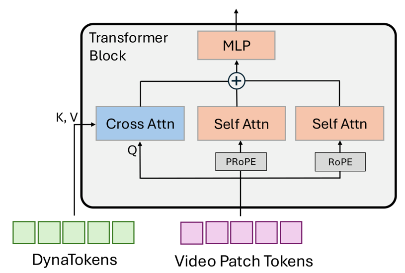
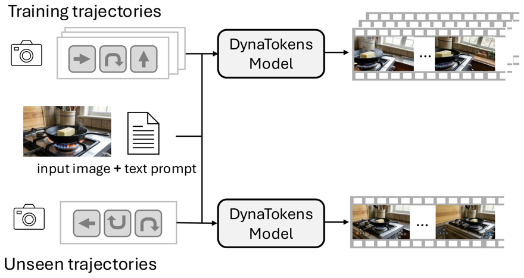

Current camera-controlled video models struggle with dynamics. We propose DynaTokens, a test-time approach
that trains a few learnable, scene-specific tokens to enable scene dynamics while preserving camera control.
DynaTokens is a lightweight add-on to a base video model and effectively decouples object motion from
camera motion, outperforming other parameter-efficient fine-tuning algorithms like LoRA, block finetuning, and TTT.
Qualitative results
DynaTokens enable dynamics for camera-controlled video generation, which existing models like HYWP, Lyra-2
and Lingbot struggle with. LiveWorld and HyDRA, which specifically train for dynamics using synthetic
data, also struggle with dynamics in realistic scenes.
The initial frame and prompt are shown at the top. The dropdown selects a camera trajectory unseen
during test-time training. The keycaps in the videos show the camera control active at that frame:
WASD (bottom-left) for translation and arrows (bottom-right) for rotation.
Camera motion:
How do DynaTokens work?
Teaching camera-controlled models dynamics is not simple, and naive methods like LoRA or TTT fail (see
comparison below). DynaTokens solves this challenge based on the following observation. Camera
control is global: it influences every patch across every frame. Scene dynamics are local: for example,
"a dog running" should affect only the dog region while preserving the rest of the scene.
DynaTokens design. Existing adaptation methods, such as LoRA, apply global parameter updates. However, since camera
information is injected directly into the generative flow (via PRoPE, Plücker rays or action
conditioning), camera control and dynamics generation are entangled, and supervision on dynamics
degrades camera control.
DynaTokens instead adds learnable tokens that the video patch tokens cross-attend to in every
transformer block. The attention weights act as a localized gate, so the tokens steer only the patches
where dynamics should occur while the frozen base model keeps its camera control behavior.

Attention map visualization. We visualize the attention weight of DynaTokens (token 3) over the video patches.
The video is shown on the left and the attention map on the right. White denotes the value of uniform
attention (1/N), red means higher and blue means lower. The time sync is expected to be coarse rather than
exact, because attention map operates on latent frames, which correspond to 4 physical frames.
DynaTokens' design enables cross attention to act like a localized gate. The attention map follows
the moving dog. This enables learning to localize to the patches containing the motion, without affecting
all patches globally, thus maintaining camera control. Check out the paper for more qualitative and quantitative
analysis on the attention map localization.
Test-time training setting. For each scene, we first curate a few trajectories with dynamics, leveraging VLM, and video generation
models. Using these trajectories, we train a few (16) additional tokens (i.e. DynaTokens) while keeping
the base model frozen. Using the learned tokens, the model can successfully generate dynamics on new,
unseen trajectories, as shown in the results section above.

Comparison with LoRA, TTT, etc.
We compare DynaTokens with parameter-efficient finetuning alternatives trained on exactly the
same curated trajectories: LoRA, block finetuning, and TTT layers. The initial frame and prompt are shown
at the top, and the dropdown selects a camera trajectory unseen during test-time training.
Camera motion:
Quantitative results
We evaluate on VBench2 and WorldScore. For VBench2, we use a subset of Dynamic Spatial Relations (DSR)
and Motion Order Understanding (MOU). For WorldScore, we measure motion accuracy (MA) with consideration of
camera movement.
BibTeX
@inproceedings{ma2026dynatokens,
title = {DynaTokens: Teaching Dynamics to Camera-Controlled Video Models at Test Time},
author = {Ma, Ziqi and Chen, Hongqiao and Gkioxari, Georgia},
booktitle = {NeurIPS},
year = {2026}
}